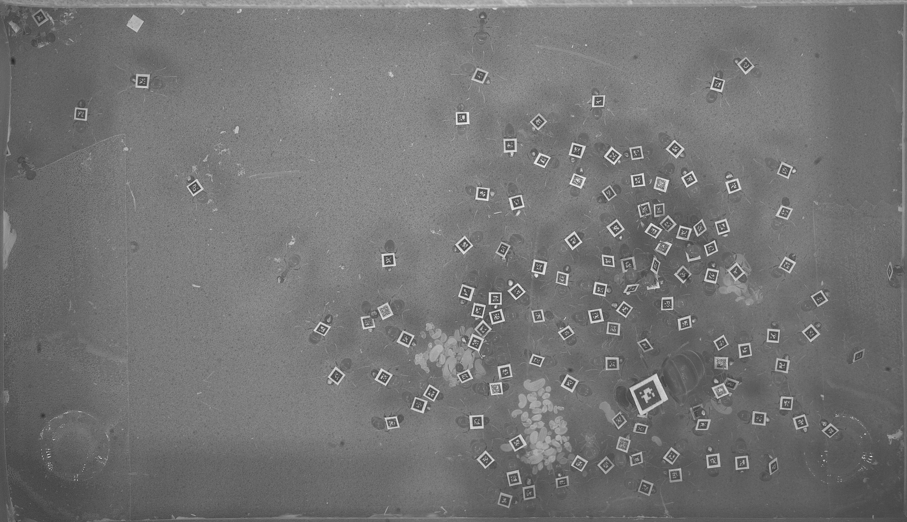
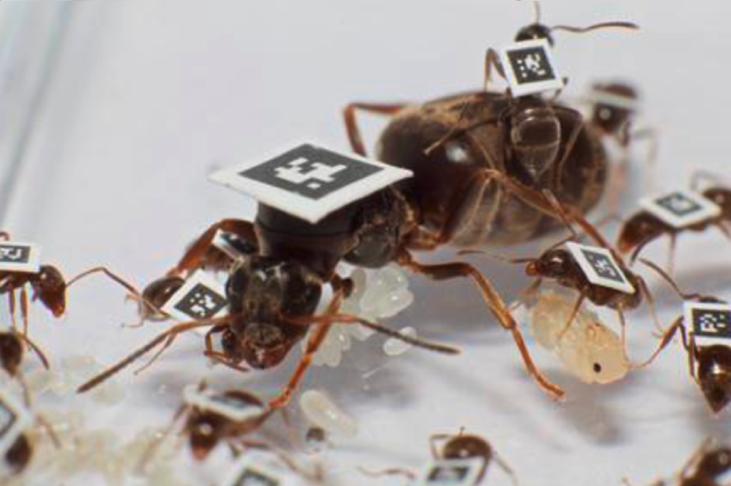

Ant colonies are extraordinary examples of collective behaviour which I consider a crucial biological model to understand some fundamental principles at the basis of multicellularity, organisms, super-organisms and societies.
A typical ant colony can comprise several hundreds or thousands of individuals all genetically very similar. Inside the nest, the ants live in very densely populated chambers where they exchange food and information by frequent direct contacts. All this makes an ant nest a true heaven for diseases such as fungi or viruses which once inside, they could rapidly spread to the entire colony. As a result ants have evolved very refined defence mechanisms to prevent and control epidemic outbreaks which we are just starting to understand (Stroeymeyt et al. 2018, Stroeymeyt et al. 2014).
In March 2020 I joined the Ant Epidemiology lab of Dr Nathalie Stroeymeyt at the University of Bristol. Here I am studying how ants control epidemic outbreaks by adapting their social interaction network and how this relates to the physical constrain of the nest.
To unveil the social network of an ant colony, I use an advanced automatic tracking technology called FORT which allows to uniquely identify each ant within the entire colony and to record all the social interactions happening outside and inside the nest for several days or weeks. Each ant is marked by a little QR tag - less than 1mm wide. The tags are glued on the torax of the ants and are automatically detected by an ultra-definition camera.
By combining individual trajectory data and the social interaction network I try to gain a better understanding of what we can learn as society from what is happening inside the nest!
References:
"Social network plasticity decreases disease transmission in a eusocial insect"
N. Stroeymeyt, A.V. Grasse, A. Crespi, D.P. Mersch, S. Cremer and L. Keller. Science,
362(6417), pp.941-945 (2018)
Link
Background picture by Adriano Wanderlingh